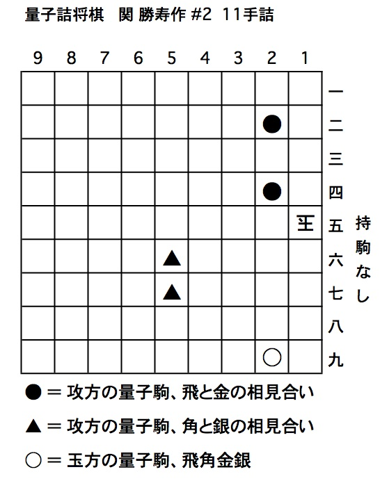
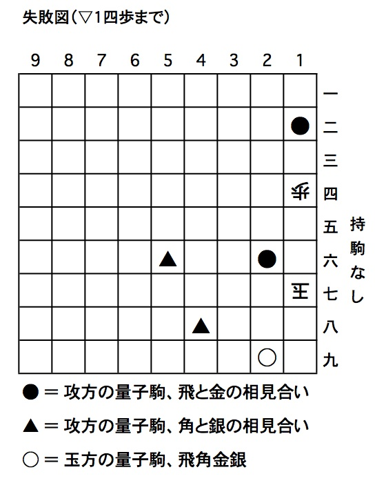
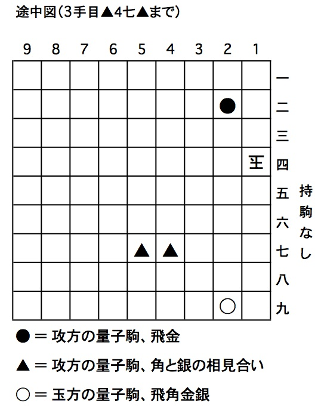
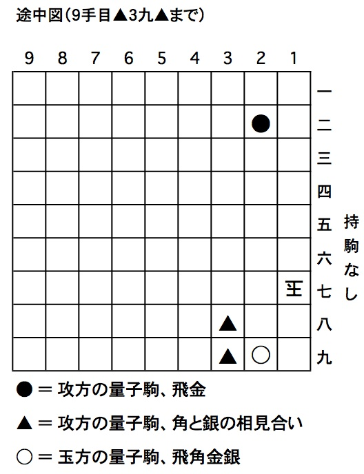
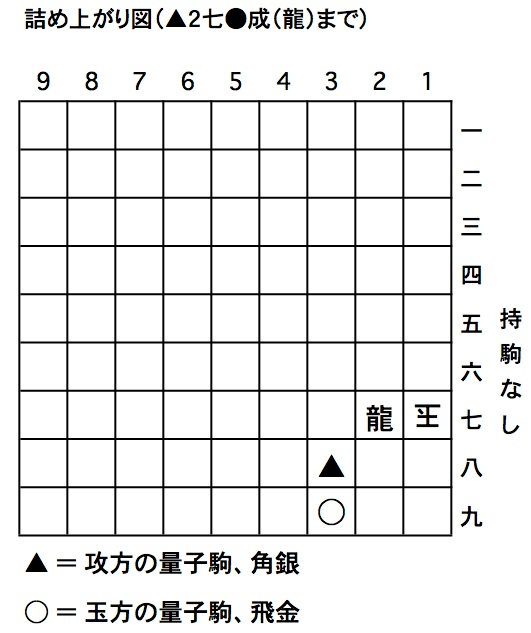

問題2の解答です。
▲１四●、▽同玉、▲４七▲、▽１五玉、▲４八▲、▽１六玉、▲３八▲、▽１七玉、▲３九▲、▽同○、▲２七●成（龍）まで11手詰め
初手▲１二●は、▽１四歩と合駒をされます。
このように、玉方には▽１四歩と捨て合いをして、量子駒を確定させるという受け方があることに、注意が必要です。
また、初手▲４八▲は、▽２六歩、▲２五●、▽１六玉、▲２六●、▽１七玉、▲１二●、▽１四歩（下の失敗図）、▲同●成（龍）、▽２八玉で、詰みません。ここでもやはり、歩を取らせる事で飛車を確定し、２六の量子駒を金に確定させてしまう、という受けが成立しています。
そこで、初手は▲１四●とします。これは、▽同玉と取る一手です。そこで、▲四七▲として、次の図となります。
ここで、
以下、先手は▲を交互に引いて王手をしますが、▲を○で取っても、合駒をしても●を引いて龍に成れば詰みますから、玉が逃げるしかありません。そして、▽１七玉まで来た時に、やはり▲３九▲と引いて、次の図になります。
今度は、▽１八玉とすると▲２九●成（龍）までで、持駒に○が余って駒余りの詰みになりますので、▽同○と取って、▲２七●成（龍）までの詰みとなります（下の詰み上がり図）。上の図から、▽同○成（龍）としても、▽２八合駒としても同じく▲２七●成（龍）までの詰みで、それでも正解となります。
本作の狙いは、▲を交互に引いて王手をする手順です。初手が分かれば手数の割には簡単ですが、初手で他の手を指したときの玉方の応手が、量子詰将棋ならではの受けがありますので、慣れないと考えにくいかもしれません。